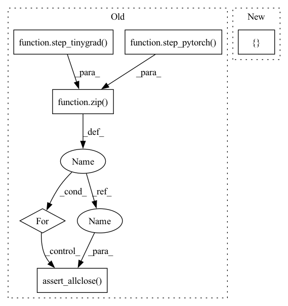

Pattern ID :6632

Before Change
np.testing.assert_allclose(x, y, atol=1e-5)
def test_rmsprop(self):
for x,y in zip(step_tinygrad(RMSprop, kwargs={"lr": 0.001, "decay": 0.99}),
step_pytorch(torch.optim.RMSprop,
kwargs={"lr": 0.001, "alpha": 0.99})):
np.testing.assert_allclose(x, y, atol=1e-5)
if __name__ == "__main__":
unittest.main()
After Change
def test_multistep_sgd_nesterov_momentum(self): self._test_sgd(10, {"lr": 0.001, "momentum": 0.9, "nesterov": True}, 1e-5, 0)
def test_multistep_sgd_high_lr_nesterov_momentum(self): self._test_sgd(10, {"lr": 10, "momentum": 0.9, "nesterov": True}, 1e-5, 3e-4)
def test_rmsprop(self): self._test_rmsprop(1, {"lr": 0.001, "alpha": 0.99}, 1e-5, 0)
def test_rmsprop_high_lr(self): self._test_rmsprop(1, {"lr": 10, "alpha": 0.99}, 1e-5, 1e-5)
def test_adam(self): self._test_adam(1, {"lr": 0.001}, 1e-5, 0)
def test_adam_high_lr(self): self._test_adam(1, {"lr": 10}, 1e-5, 1e-5)
In pattern: SUPERPATTERN
Frequency: 3
Non-data size: 6
Instances
Fragment ID: 22965368
Project Name: geohot/tinygrad
Commit Name: 305b9f2d216674f5e565c49152fcdd369615df02
Time: 2023-03-11
Author: geohot@gmail.com
File Name: test/test_optim.py
M Class Name: TestOptim
N Class Name: TestOptim
M Method Name: test_rmsprop(1)
N Method Name: test_rmsprop(1)
M Parent Class: unittest.TestCase
N Parent Class: unittest.TestCase
M File Name: test/test_optim.py
N File Name: test/test_optim.py
M Start Line: 67
M End Line: 71
N Start Line: 57
N End Line: 57
'>
Before Change
np.testing.assert_allclose(x, y, atol=1e-4)
def test_sgd(self):
for x,y in zip(step_tinygrad(SGD, kwargs={"lr": 0.001}),
step_pytorch(torch.optim.SGD, kwargs={"lr": 0.001})):
np.testing.assert_allclose(x, y, atol=1e-5)
def test_rmsprop(self):
for x,y in zip(step_tinygrad(RMSprop, kwargs={"lr": 0.001, "decay": 0.99}),
step_pytorch(torch.optim.RMSprop,
After Change
def _test_rmsprop(self, steps, opts, atol, rtol): self._test_optim(RMSprop, torch.optim.RMSprop, steps, opts, atol, rtol)
def _test_adam(self, steps, opts, atol, rtol): self._test_optim(Adam, torch.optim.Adam, steps, opts, atol, rtol)
def test_sgd(self): self._test_sgd(1, {"lr": 0.001}, 1e-6, 0)
def test_sgd_high_lr(self): self._test_sgd(1, {"lr": 10}, 1e-6, 1e-5)
def test_multistep_sgd(self): self._test_sgd(10, {"lr": 0.001}, 1e-6, 0)
'>
Fragment ID: 22965369
Project Name: geohot/tinygrad
Commit Name: 305b9f2d216674f5e565c49152fcdd369615df02
Time: 2023-03-11
Author: geohot@gmail.com
File Name: test/test_optim.py
M Class Name: TestOptim
N Class Name: TestOptim
M Method Name: test_sgd(1)
N Method Name: test_sgd(1)
M Parent Class: unittest.TestCase
N Parent Class: unittest.TestCase
M File Name: test/test_optim.py
N File Name: test/test_optim.py
M Start Line: 62
M End Line: 66
N Start Line: 45
N End Line: 45
'>
Before Change
class TestOptim(unittest.TestCase):
def test_adam(self):
for x,y in zip(step_tinygrad(Adam),
step_pytorch(torch.optim.Adam)):
np.testing.assert_allclose(x, y, atol=1e-4)
def test_sgd(self):
for x,y in zip(step_tinygrad(SGD, kwargs={"lr": 0.001}),
step_pytorch(torch.optim.SGD, kwargs={"lr": 0.001})):
After Change
def test_rmsprop(self): self._test_rmsprop(1, {"lr": 0.001, "alpha": 0.99}, 1e-5, 0)
def test_rmsprop_high_lr(self): self._test_rmsprop(1, {"lr": 10, "alpha": 0.99}, 1e-5, 1e-5)
def test_adam(self): self._test_adam(1, {"lr": 0.001}, 1e-5, 0)
def test_adam_high_lr(self): self._test_adam(1, {"lr": 10}, 1e-5, 1e-5)
def test_multistep_rmsprop(self): self._test_rmsprop(10, {"lr": 0.001}, 1e-5, 0)
'>
Fragment ID: 22965367
Project Name: geohot/tinygrad
Commit Name: 305b9f2d216674f5e565c49152fcdd369615df02
Time: 2023-03-11
Author: geohot@gmail.com
File Name: test/test_optim.py
M Class Name: TestOptim
N Class Name: TestOptim
M Method Name: test_adam(1)
N Method Name: test_adam(1)
M Parent Class: unittest.TestCase
N Parent Class: unittest.TestCase
M File Name: test/test_optim.py
N File Name: test/test_optim.py
M Start Line: 57
M End Line: 61
N Start Line: 59
N End Line: 59